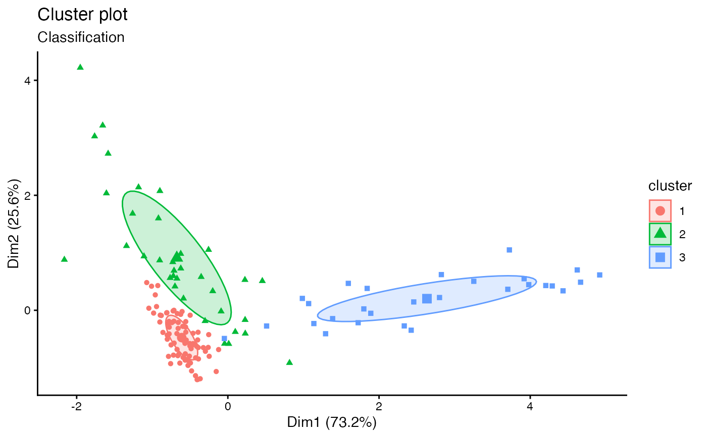

fviz_mclust.RdPlots the classification, the uncertainty and the BIC values returned by the Mclust() function.
fviz_mclust(object, what = c("classification", "uncertainty", "BIC"), ellipse.type = "norm", ellipse.level = 0.4, ggtheme = theme_classic(), ...) fviz_mclust_bic(object, model.names = NULL, shape = 19, color = "model", palette = NULL, legend = NULL, main = "Model selection", xlab = "Number of components", ylab = "BIC", ...)
| object | an object of class Mclust |
|---|---|
| what | choose from one of the following three options: "classification" (default), "uncertainty" and "BIC". |
| ellipse.type | Character specifying frame type. Possible values are
'convex', 'confidence' or types supported by
|
| ellipse.level | the size of the concentration ellipse in normal
probability. Passed for |
| ggtheme | function, ggplot2 theme name. Default value is theme_pubr(). Allowed values include ggplot2 official themes: theme_gray(), theme_bw(), theme_minimal(), theme_classic(), theme_void(), .... |
| ... | other arguments to be passed to the functions fviz_cluster and ggpar. |
| model.names | one or more model names corresponding to models fit in object. The default is to plot the BIC for all of the models fit. |
| shape | point shape. To change point shape by model names use shape = "model". |
| color | point and line color. |
| palette | the color palette to be used for coloring or filling by groups. Allowed values include "grey" for grey color palettes; brewer palettes e.g. "RdBu", "Blues", ...; or custom color palette e.g. c("blue", "red"); and scientific journal palettes from ggsci R package, e.g.: "npg", "aaas", "lancet", "jco", "ucscgb", "uchicago", "simpsons" and "rickandmorty". Can be also a numeric vector of length(groups); in this case a basic color palette is created using the function palette. |
| legend | character specifying legend position. Allowed values are one of c("top", "bottom", "left", "right", "none"). To remove the legend use legend = "none". Legend position can be also specified using a numeric vector c(x, y); see details section. |
| main | plot main title. |
| xlab | character vector specifying x axis labels. Use xlab = FALSE to hide xlab. |
| ylab | character vector specifying y axis labels. Use ylab = FALSE to hide ylab. |
fviz_mclust: Plots classification and uncertainty.
fviz_mclust_bic: Plots the BIC values.
if(require("mclust")){ # Compute model-based-clustering require("mclust") data("diabetes") mc <- Mclust(diabetes[, -1]) # Visaulize BIC values fviz_mclust_bic(mc) # Visualize classification fviz_mclust(mc, "classification", geom = "point") }#>#>#>